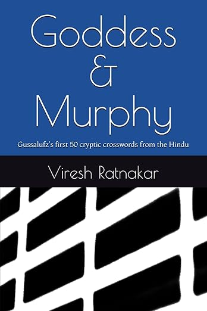

The Hindu Cryptic (THC) crosswords by Gussalufz
Interactive versions of my THC puzzles that were published 4+ months back. Each puzzle includes revealable/checkable solutions and annotations as well as some notes by me, so be sure to click on "Reveal all!" after solving.|
Like Us?
THC #14,541 from Saturday, July 19, 2025
|
|
Baleful Nurse At Work
THC #14,515 from Thursday, June 19, 2025
|
|
Khadi Urad
THC #14,499 from Saturday, May 31, 2025
|
|
Statuesque
The Hindu Cryptic On Sunday (THCOS) #2 from May 4, 2025
|
|
20 + 27
THC #14,452 from Monday, April 7, 2025
|
|
How To Get, How?
THC #14,424 from Wednesday, March 5, 2025
|
|
Love?
THC #14,398 from Monday, February 3, 2025
|
|
CH-CH
THC #14,371 from Wednesday, January 1, 2025
|
|
Silky Pad?
THC #14,344 from Saturday, November 30, 2024
|
|
The + (Six Words)
THC #14,319 from Thursday, October 31, 2024
|
|
Zero Hours
THC #14,292 from Saturday, September 28, 2024
|
|
Kya? Phir Vahi?
THC #14,263 from Monday, August 26, 2024
|
|
Tom-tomming Typhoons!
THC #14,238 from Saturday, July 27, 2024
|
|
Semordnilap
THC #14,214 from Saturday, June 29, 2024
|
|
21s?
THC #14,189 from Friday, May 31, 2024
|
|
Let's Replay
THC #14,163 from Wednesday, May 1, 2024
|
|
What's Up?
THC #14,136 from Saturday, March 30, 2024
|
|
One Doesn't Belong?
THC #14,108 from Tuesday, February 27, 2024
|
|
Kakamuchee
THC #14,082 from Saturday, January 27, 2024
|
|
Do Jasoos
THC #14,057 from Thursday, December 28, 2023
|
|
Stripper
THC #14,031 from Tuesday, November 28, 2023
|
|
A Puzzle With Layers
THC #14,006 from Saturday, October 28, 2023
|
|
L for Lufz
THC #13,981 from Thursday, September 28, 2023
|
|
25 25
THC #13,954 from Saturday, August 26, 2023
|
|
Woke Abruptly?
THC #13,930 from Saturday, July 29, 2023
|
|
Covertly convert (13)
THC #13,929 from Friday, July 28, 2023
|
|
Some Jazz Players?
THC #13,902 from Tuesday, June 27, 2023
|
|
Sketchy People?
THC #13,878 from Tuesday, May 30, 2023
|
|
A Tall Tale?
THC #13,866 from Tuesday, May 16, 2023
|
|
Inner Secrets?
THC #13,853 from Monday, May 1, 2023
|
|
Two Grid-related Transport Mechanisms
THC #13,828 from Saturday, April 1, 2023
|
|
Pioneer
THC #13,802 from Thursday, March 2, 2023
|
|
Madonna's in it
THC #13,776 from Tuesday, January 31, 2023
|
|
Zzz...
THC #13,751 from Saturday, December 31, 2022
|
|
What A Cracker!
THC #13,726 from Friday, December 2, 2022
|
|
Nunc Est Bibendum!
THC #13,711 from Tuesday, November 15, 2022
|
|
Bond's Story in 21, 23, 25
THC #13,695 from Thursday, October 27, 2022
|
|
Charles's Story
THC #13,671 from Tuesday, September 27, 2022
|
|
7 About 7
THC #13,647 from Monday, August 29, 2022
|
|
9 + 21 = 25 + ?
THC #13,633 from Friday, August 12, 2022
|
|
Don't Tell Anyone
THC #13,619 from Wednesday, July 27, 2022
|
|
Prime Time
THC #13,591 from Friday, June 24, 2022
|
|
Four of Clubs?
THC #13,563 from Monday, May 23, 2022
|
|
Multilayered Puzzle
THC #13,543 from Friday, April 29, 2022
|
|
Next, A Sheep Dancing
The Hindu Cryptic On Sunday #77, April 10, 2022
|
|
The Best Left-hander
THC #13,502 from Saturday, March 12, 2022
|
|
Qaotic?
THC #13,495 from Friday, March 4, 2022
|
|
Self-Reverential, Moi?
THC #13,449 from Saturday, January 8, 2022
|
|
Puzzle's Pulse
THC #13,425 from Saturday, December 11, 2021
|
|
Seeing Red?
THC #13,401 from Saturday, November 13, 2021
|
|
Brainy, Essentially?
THC #13,380 from Tuesday, October 19, 2021
|
|
Self-Referential, Moi?
THC #13,361 from Saturday, September 25, 2021
|
|
Rocket Scientist
THC #13,335 from Wednesday, August 25, 2021
|
|
Boy!
THC #13,310 from Tuesday, July 27, 2021
|
|
Aap Ki Yaad...
THC #13,287 from Wednesday, June 30, 2021
|
|
Cross Words
THC #13,266 from Saturday, June 5, 2021
|
|
Visitors
THC #13,242 from Saturday, May 8, 2021
|
|
A Hidden Drawer
THC #13,221 from Wednesday, April 14, 2021
|
|
Running Theme
THC #13,199 from Friday, March 19, 2021
|
|
Hacky
THC #13,172 from Tuesday, February 16, 2021
|
|
Subject Matter
THC #13,147 from Monday, January 18, 2021
|
|
Healthy Constitution
THC #13,120 from Wednesday, December 16, 2020
|
|
Guru
THC #13,094 from Monday, November 16, 2020
|
|
Consumer Products
THC #13,072 from Wednesday, October 21, 2020
|
|
Dr. Who?
THC #13,044 from Thursday, September 10, 2020
|
|
Ghalib, Tera...
THC #13,013 from Thursday, August 13, 2020
|
|
Quaquaquaqua
THC #12,983 from Thursday, July 9, 2020
|
|
Indie Comics?
THC #12,950 from Monday, June 1, 2020
|
|
A Zoologist and DNA
THC #12,917 from Thursday, April 23, 2020
|
|
Faster!
THC #12,884 from Monday, March 16, 2020
|
|
Thoda Khao...
THC #12,852 from Friday, February 7, 2020
|
|
A Powerful Relationship
THC #12,820 from Tuesday, December 31, 2019
|
Recent THC crosswords by Gussalufz
The links below go to THC web site.|
Triple Or Nothing
THC #14,682 from Saturday, January 3, 2026
|
|
Jayant's Issue?
THC #14,655 from Wednesday, December 3, 2025
|
|
Nine Crowns
THCOS #29 from Sunday, November 9, 2025
|
|
It Opened With Open Government
THC #14,607 from Tuesday, October 7, 2025
|
|
Both Sides Are Same
THCOS #19 from Sunday, August 31, 2025
|
Other cryptic crosswords by Gussalufz (and doppelgängers, and friends!)
Several puzzles have special effects and/or trickery. Nearly all puzzles are interactively solvable (please click on "Reveal all!" after solving, to see my notes).|
acad-global-2025-02
December 2025 |
ACAD Global 2025 #3
The third among the three crosswords that I set for ACAD Global 2025 (a daily online clue-solving contest).
|
|
acad-global-2025-01
December 2025 |
ACAD Global 2025 #2
The second among the three crosswords that I set for ACAD Global 2025 (a daily online clue-solving contest).
|
|
acad-global-2024-01
December 2025 |
ACAD Global 2025 #1
The first among the three crosswords that I set for ACAD Global 2025 (a daily online clue-solving contest).
|
|
Browser 245
December 2025 |
The Browser Cryptic #245
Themeless (ed. Dan Feyer)
My swan song in the Browser (they are shutting down their crossword section at the end of the year). Working
with Dan has been great; hope some other opportunities for collaborating materialize in the future.
|
|
ixl-2025-2
October 2025 |
IXL 2025 Round 7
Themeless and ninaless.
I was the anonymous setter for this Indian Crossword League (IXL) 2025
online round crossword.
|
|
ixl-2025-1
September 2025 |
IXL 2025 Round 2
Themeless and ninaless.
I was the anonymous setter for this Indian Crossword League (IXL) 2025
online round crossword.
|
|
Browser 231
July 2025 |
The Browser Cryptic #231
Themeless and ninaless (ed. Dan Feyer)
Dan elevates crossword, and this one is no exception. It also has a new kind of wordplay (which I also tried in a THC around the same time).
|
|
wccc-2025
June 2025 |
WCCC 2025 Individual Championship (Grid 2)
Themeless and ninaless
I was the anonymous setter for this World Cryptic Crossword Championship (WCCC) 2025 Individual Championship crossword. It was the second of the two grids used. Matthew Marcus (USA) won the championship, but for this specific grid, the top three solvers were: Simon Anthony (England), Matthew Marcus (USA), Deane Short (England).
|
|
AVCX Mini
June 2025 |
AVCX Mini Cryptic #2 6/26/2025
Editor: Steve Mossberg
A beginner-level mini cryptic (7x7), my first in AVCX ($1, or you can consider subscribing to AVCX).
|
|
Object: "11"
May 2025 |
Object Cryptic Crossword: "11"
"11"
This is my fourth
Object
magazine crossword (in their "mini-issue newspaper" again, I believe). The title alludes
to a theme.
|
|
Browser 218
April 2025 |
The Browser Cryptic #218
Leo's Pet
First of three 2025 Browser puzzles of mine (ed. Dan Feyer).
The eight-letter final answer is also described early on in any meaningful reference.Made freely available here with kind permission from the editor. |
|
Object 003
February 2025 |
Object Cryptic Crossword 003
Kalaa-Kali
This is my third desi-flavoured crossword to appear in
Object
magazine (in their "mini-issue newspaper"). It was drafted in 2023 and does have a theme.
|
|
ixl-2024-1
December 2024 |
IXL 2024 Finals (Prelims)
Themeless and ninaless.
I was the anonymous setter for this Indian Crossword League (IXL) 2024
Finals crossword.
|
|
ixl-2024-2
October 2024 |
IXL 2024 Round 3
Themeless and ninaless.
I was the anonymous setter for this Indian Crossword League (IXL) 2024
online round crossword.
|
|
5-must-get-4
December 2024 |
Five Must Get Four?
I had run this puzzle online, accepting solution submissions, in December 2024.
A word of a kind has to be eliminated from the solution before entering it into the grid, for a small number of clues. The enumerations shown for these clues are for their grid entries. The eliminated words can be found elsewhere in the completed grid. |
|
34
October 2024 |
Blowin' In The Wind
My fourth crossword in the Araucaria-founded
1 Across magazine, UK,
established in 1984. This crossowrd has been made available here freely with
kind permission from 1 Across.
There are eight numbers hidden in this grid, some running over from one solution to another and one being a Roman numeral. Each hidden number uses at least two letters. A significant word can then be unravelled from the letters appearing in these eight numbered squares in the grid. |
|
Browser 181
July 2024 |
The Browser Cryptic #181
Cross Words: A Teacher's Admonition
Yet another Browser puzzle of mine (ed. Dan Feyer).
The completed grid reveals the admonition. Who is the teacher? (Two symmetrical entries and one clue provide hints to the context.)Made freely available here with kind permission from the editor. |
|
Object 005
May 2024 |
Object Cryptic Crossword 005
What happened in India in May 2024?
This is my second crossword to appear in
Object
magazine. My Object crosswords
are quite Desi-flavoured and are somewhat on the easier side.
|
|
Browser 166
March 2024 |
The Browser Cryptic #166
Themeless
Another puzzle by me appearing in The Browser (ed. Dan Feyer). I was quite
pleased with 31A :-).
This is my fourth crossword appearing in
The Browser.
My Browser crosswords are made freely available here (roughly 6 months
after publication) with kind permission from the editor.
|
|
32
February 2024 |
69/89
Another variety cryptic that was run as an online contest.
Connecting two entries of a kind will provide positional guidance for finding two headlines and their whereabouts in history. |
|
ixl-2023-2
December 2023 |
IXL 2023 Finals: Prelim-1
A little homage in there.
I was the anonymous setter for this Indian Crossword League (IXL) 2023
crossword that was one of the two used to narrow down the finalists
to pick the top six for the on-stage round.
|
|
Browser 144
October 2023 |
The Browser Cryptic #144
Title (three words)
This is my third crossword appearing in
The Browser.
It has a theme and
the preamble asks solvers to find a "three-word title."
My Browser crosswords are made freely available here (roughly 6 months
after publication) with kind permission from the editor.
|
|
ixl-2023-1
October 2023 |
IXL 2023 Round 5
Themeless and ninaless.
I was the anonymous setter for this Indian Crossword League (IXL) 2023
online round crossword.
|
|
29
July 2023 |
Determination
My third crossword in the Araucaria-founded
1 Across magazine, UK,
established in 1984. This crossowrd has been made available here freely with
kind permission from 1 Across.
Solutions to four Down clues have a common element that's called out by the title. These solutions are also the definitions for four other special Down clues that do not include definitions. Solutions to these special Down clues have to be entered in the grid in a cryptic manner. Enumerations shown in these special clues are for the grid entries, not for the solutions. When finished, the phrase formed by the circled letters will also confirm what you did. |
|
Browser 131
July 2023 |
The Browser Cryptic #131
Pioneer
This is my second crossword appearing in
The Browser.
It has a theme and an unusually hidden nina that solvers were asked to find
(with a prize going to one lucky solver).
My Browser crosswords are made freely available here (roughly 6 months
after publication) with kind permission from the editor.
|
|
Object 001
July 2023 |
Object Cryptic Crossword 001
Kutch ni Koyal!
This is my first crossword in Object magazine, a sleek coffee-table-worthy
magazine from Bombay that goes deep into Indian socio-political-cultural
issues *and* fashion. I have tried to make my crossword reflect the authentic
desi vibe of the mag.
|
|
By Hitchhiker & Gussalufz
April 2023 |
Random Number Doubled
My first collaboration with the hoopiest of all froods, Martin DeMello!
We ran this one as an online contest in April 2023.
|
|
Browser 112
February 2023 |
The Browser Cryptic #112
Browser aficionados may spot a theme!
This is my first (non-mini) cryptic in
The Browser Crossword.
The Browser is a subscription-based newsletter from UK. Every Sunday, it carries
a US-style cryptic crossword brilliantly edited by
Dan Feyer.
This puzzle has some pukka American features, such as American
spellings, no Commonwealthy abbreviations, no setter-pseudonym, and a couple
of crass surfaces :-). With kind permission from the editor, I've made this
puzzle freely available here. I'll be doing the same with all my Browser
crosswrods, roughly six months after they are first published.
|
|
ixl-2022-1
December 2022 |
IXL 2022 Finals: On-stage Grid-2
Also themeless and ninaless.
I was the anonymous setter for this very last Indian Crossword League (IXL) 2022
crossword that was solved on-stage by the finalists. This is a
recording of the live
stream from the event.
|
|
ixl-2022-2
November 2022 |
IXL 2022 Round 8
Themeless and ninaless.
I was the anonymous setter for this Indian Crossword League (IXL) 2022
online round crossword.
|
|
ixl-2022-0
October 2022 |
IXL 2022 Practice Round
Swades.
I was the anonymous setter for this Indian Crossword League (IXL) 2022 practice round crossword.
|
|
Browser-Mini-22-01
November 2022 |
Browser Sevens #10
This is a mini cryptic (5x7) that's meant to be an easy puzzle (but hopefully
is fun, nonetheless!).
This crossword was published on Tuesday, November 8, 2022 (the day of
mid-term elections in the US).
|
|
27
July 2022 |
Missing Links
My second crossword in
1 Across,
in 1984. This crossowrd has been made available here freely with
kind permission from 1 Across.
a monthly subscription crossword magazine
started by the legendary
Araucaria
in 1984. This crossowrd has been made available here freely with
kind permission from 1 Across.
Each across clue omits one or more letters from its wordplay. Figure out a few ways to connect and recover the missing links. |
|
ixl-2021-2
December 2021 |
IXL 2021 Finals: Preliminary Round 2
Minus or plus?
I was the anonymous setter for this Indian Crossword League (IXL) 2021 crossword, used in the finals.
|
|
ixl-2021-1
November 2021 |
IXL 2021 Online Round 9
One does a lot of talking...
I was the anonymous setter for this Indian Crossword League (IXL) 2021 crossword, used in an online round.
|
|
26
December 2021 |
Blame Ancients?
This crossword is a part of IIT-Madras Alumni Association's 2021
annual gathering event, Sangam. The crossword's theme is
borrowed from the event's theme, which is,
"Restoring Balance in STEM." It was run as an open contest in early 2022.
|
|
23
August 2021 |
Trump is Trump
Is W the only titular connection?
|
|
ixl-09-2020
November 2020 |
IXL 2020 City Round
Encouraging words...
I was the anonymous setter for this IXL 2020 crossword.
|
|
20
October 2020 |
Unlock and find a bug
Elementary, etc.
I ran this as another fun competition across a few online groups. Solvers'
comments can be seen after clicking on "Reveal All" in the solved version.
|
|
By Ribelle & Gussalufz
September 2020 |
Chain Letters
A puzzle jointly created with Faten Ismail,
a brilliant and natural setter.
We ran this as a fun competition across a few online groups. Solvers' comments can be seen after clicking on "Reveal All" in the solved version. |
|
21
July 2020 |
Last Solo
Is shahar mein...
In the Los Altos Town Crier. Here's another version of the same puzzle, in which beginner solvers can get progressive hints for each clue.
|
|
19
May 2020 |
Wormholes
Travellers...
|
|
18
February 2020 |
Bar Bar Dekko
Reading between lines?
|
|
15
December 2019 |
Al's Trick
Who is Al and what's his trick?
|
|
17
July 2019 |
Puzzling Times
Sometimes...!
In the book
Cryptic Crossroads Volume 2
|
|
16
July 2019 |
Untitled Crossword
Ninas foreshadow Exolve!
|
|
14
June 2019 |
Putting Two And Two Together
Partly diagramless; metas probably my best.
|
|
13
May 2019 |
Cursory Appearances
Why is "squinting" part of the instructions?
|
|
12
January 2019 |
Fifteen Puzzles
What is a fifteen puzzle?
|
|
11
December 2018 |
Missing Instructions
Find the instructions!
|
|
10
August 2018 |
King's Rule
Hhgttg-themed clues, but is that it?
|
|
8
April 2018 |
Do Squares Reveal?
Does the title reveal?
|
|
5
April 2018 |
French Toast
Appropriately numbered puzzle.
|
|
4
January 2018 |
Hidden Figure
Rocket scientist needed.
|
|
3
December 2017 |
Smashing Plates
Moving puzzle.
|
|
-
September 2017 |
22⅘ Across
Fractionally crazy.
|
|
2
July 2017 |
Many Rustams
Lots hidden!
In the book, Cryptic Crossroads
|
|
1
June 2016 |
Gussalufz
My first grid after at least 10 years.
In the 1ACross Facebook group
|
Scrypbles: my articles/books on cryptics
| April 2025 | Linking Words |
| July 2024 |

Goddess & Murphy: Gussalufz's first 50 cryptic crosswords from the Hindu:
My first fifty THC crosswords are now available in convenient book form. Please contact me if you really want the printed book version but the price is unaffordable or the book is
not available in your region. The link above goes to the U.S. Amazon site. Here's where
to get it using Amazon U.K.
If you're in India and would like a copy, please use this form (a friend of mine will ship it). |
| April 2023 | Cryptic Grammar |
| April 2022 | Composite Anagrams |
Links to crossword resources
| Exolve | Free open source software (MIT License) for setting up interactively solvable crosswords. All my puzzles above are powered by it. I have developed this software and I actively maintain it. The link takes you to the Exolve GitHub project that includes a detailed README file with instructions. |
| Exolve Player: https://exolve.app |
This is a powerful web app that uses Exolve to provide you with interactively solvable
crosswords from .puz and ipuz files. Of course, you can also open Exolve-formatted files
with it. Any crossword opened with Exolve Player will also have the Webifi interface
available (see below).
Moreover, it also lets you create an interactive version for any standard blocked crossword, starting from just the text of the clues (copied from a PDF or any web site), by automatically inferring the grid using clue numbers and enumerations. |
| Exet: https://exet.app | Free open source software (MIT License) for constructing crosswords. You can save the crosswords as Exolve files as well as .puz files. I have developed this software and I actively maintain it. You can directly start using the web app link given to the left, or you can access the Exet GitHub project for the source code and documentation. |
|
Exet-Hindi
Exet-Brazilian |
Versions of Exet for creating Hindi iand Portuguese (Brazilian) crosswords! Early days for these, lots of rough edges, but they will only get better. |
| Exost |
I set up this site for hosting crosswords in late 2025. I already owned the
site and was paying for it (for xlufz,
a service used in Exet for annotating indicator lists). So, I decided to have a
bit of fun coding up this service, and added it to the same site. My goal is to
keep this service free, simple, hassle-free, and no-string-attached (no
tracking, no ads, no cookies, no A.I., no heavy-duty sign-ups, ...). It offers
all the powerful features that the Exolve format enables (but, of course, you
can simply upload a .puz or .ipuz file too). The main goal is to allow anyone to
put up a crossword that they wish to share with friends and family or the whole
world. All you need is an email address (where you'll receive your password).
Exost is integrated in Exolve Player and Exet too. You can directly upload to it from those web apps. I intend to keep this a simple service: all it will do is let you upload crosswords and get URLs to serve them from, which is a huge barrier for most folks. Exost has no comments features, no community creation, etc. Of course, someone can build these features while using Exost to host crosswords (but to them, I would say: just give the excellent mycrossword.co.uk site a try first). Do send me bug reports, comments, and suggestions for Exost, preferably via emailing exost.exolve@gmail.com. |
| Webifi | Free open source software (MIT License) that complements Exolve by adding an "interactive-fictionesque" solving interface to crosswords. You can navigate through clues, enter solutions, get assistance, etc., all in a manner similar to playing a text adventure game. You can use audio output and (if available on your platform) voice input, to create a screen-free crossword-solving experience. Webifi is enabled on most of my crosswords here, and in any crossword opened with Exolve Player. See documentation and details at the Webifi GitHub project. |
| Intro to Cryptic Crosswords | When someone asks me to recommend a good introduction for cryptic crosswords, Sarah Lolley's excellent site is what I usually start with. |
| Crossword Unclued | @ShuchiU's blog with excellent articles on various aspects of cryptic crosswords, including nice compilations of lists of indicator words. |
| Big Dave's Crossword Blog | Blog articles on Daily and Sunday Telegraph cryptic crosswords. Many other interesting sections (such as an annotated list of mythological characters). |
| Fifteensquared | Daily analysis of most British newspaper cryptic crosswords. If I come up with an indicator that I'm not sure of, I search in this site to see if someone else has pulled off the same trick previously, without inviting ridicule. |
| Off-Grid | A wonderful podcast that's not quite about crosswords: hosts Dave & Void structure a freewheeling discussion loosely around a specific crossword in each episode, alongside a guest ("General Knowledge") who also quizzes them. The General's voice in Episode 13 and Episode 45 might be familiar to some! |
| Charlie Methven's tips on setting | Charlie Methven (who sets as Chameleon and Methuselah) has written a comprehensive series of "sometimes opinionated" tips on cryptic setting, packed with useful insights on surface readings, cryptic grammar, punctuation nuances, etc. |
About
Me
|
I'm Viresh Ratnakar, a cryptic crossword enthusiast and
a setter for the Hindu Cryptic (and elsewhere).
Other interests: Books. Running. Cooking. Eating.
Writing. Coding. Movies. TV. Cricket on TV. Red wine.
Beer. Scotch. Dogs. I get along best with dogs.
Here's a feature on me that appeared in Los Altos Town Crier, accompanying an entry-level, locally-themed crossword that I constructed for them. I usually set crosswords under the pseudonym Gussalufz, which is a cross-lingual portmanteau word of sorts. Gussa in Hindi ("गुस्सा") means "cross" (as in "angry"), and lufz in Hindi/Urdu ("लफ्ज़") means "word." You can hear the pronunciation by clicking on the "speaker" icon in the Hindi panel, using this Google Translate link. |
| Contact | @vireshratnakar on Twitter, @viresh@mastodon.social on Mastodon, @viresh.bsky.social on Bluesky, viresh at gmail d0t com. |